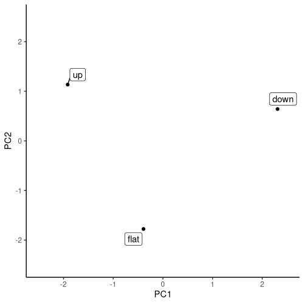

library(torch)
library(luz)
library(purrr)
library(readr)
library(dplyr)
uci <- "https://archive.ics.uci.edu"
ds_path <- "ml/machine-learning-databases/heart-disease"
ds_file <- "processed.cleveland.data"
download.file(
file.path(uci, ds_path, ds_file),
destfile = "resources/tabular-heart.csv"
)
heart_df <- read_csv(
"resources/tabular-heart.csv",
col_names = c(
"age",
# 1 = male; 0 = female
"sex",
# chest pain type
# (1 = typical angina, 2 = atypical angina,
# 3 = non-anginal pain, 4 = asymptomatic)
"pain_type",
# in mm Hg on admission
"resting_blood_pressure",
# serum cholesterol in mg/dl
"chol",
# > 120 mg/dl, true (1) or false (0)
"fasting_blood_sugar",
# 0 = normal, 1 = ST-T wave abnormality
# (T wave inversions and/or ST elevation
# or depression of > 0.05 mV),
# 2 = probable or definite left ventricular
# hypertrophy by Estes' criteria
"rest_ecg",
# during exercise
"max_heart_rate",
# exercise induced angina (1 = yes, 0 = no),
"ex_induced_angina",
# ST depression induced by exercise relative to rest
"old_peak",
# slope of the peak exercise ST segment
# (1 = upsloping, 2 = flat, 3 = downsloping)
"slope",
# number of major vessels (0-3) colored by fluoroscopy
"ca",
# 3 = normal; 6 = fixed defect; 7 = reversible defect
"thal",
# 1-4 = yes; 0 = no
"heart_disease"
),
na = "?")20 Tabular data
So far, we’ve been working with images exclusively. With images, pixel values are arranged in a grid; or several grids, actually, in case there are several channels. However many there may be, all values are of the same type: integers between 0 and 255, for example, or (when normalized) floats in the interval from 0 to 1. With tabular (a.k.a.: spreadsheet) data, however, you could have a mix of numbers, (single) characters, and (single- or multi-token) text.
As we discussed, way back when talking about tensor creation, torch cannot work with non-numerical data. In consequence, characters and text will have to be pre-processed and encoded numerically. For single characters, or individual strings, this poses few difficulties: just convert the R character vectors to factors, and then, the factors to integers. Pre-processing for regular text, however, is a much more involved topic, one we can’t go into here.
Now, assume that we’re presented with an all-numeric data frame. (Maybe it’s been all-numeric from the outset; maybe we’ve followed the above-mentioned “integerization-via-factors” recipe to make it so.) Still, what these numbers mean may differ between features.
20.1 Types of numerical data, by example
A classic distinction is that between interval, ordinal, and categorical data. Assume that for three individuals, we’re told that, for some feature, their respective scores are 2, 1, and 3. What are we to make of this?
First, the numbers could just be encoding “artifacts”. That would be the case if, say, 1 stood for apple, 2 for orange, and 3, for pineapple. Then, we’d have categorical data.
Second, the numbers could represent grades, 1 denoting the best, 2 the second-best, 3 the one thereafter … and so on. In this case, there is a ranking, or an ordering, between values. We have no reason to assume, though, that the distance between 1 and 2 is the same as that between 2 and 3. These are ordinal data.
Finally, maybe those distances are the same. Now, we’re dealing with interval data.
Put in this way, the distinction may seem trivial. However, with real-world datasets, it is not always easy to know what type of data you’re dealing with.
To illustrate, we now inspect the popular heart disease dataset, available on the UCI Machine Learning Repository. It is this dataset we are going to build a classifier for, in this chapter.
In what follows, the aspiration is not to be completely sure we’re “getting it right”; instead, it’s about showing how to approach the task in a conscientious (if I may say so) way.
We start by loading the dataset. Here heart_disease is the target, and missing values are indicated by a question mark.
As you see, I’ve annotated the features with information given by the dataset creators.
Based on this information, as well as the actual values in the dataset, the following look like interval data to me:
age,resting_blood_pressure,chol,max_heart_rate, andold_peak.
At the other end of the dimension, some features are clearly conceived as binary here: namely, the predictors sex, fasting_blood_sugar, and ex_induced_angina, as well as the target, heart_disease. Predictors that are binary, with values either zero or one, are usually treated as numerical. No information is lost that way. An alternative would be to represent them by length-two vectors: either [0, 1] (when the given value is 0) or [1, 0] (when the given value is 1). This is called one-hot encoding, “one-hot” referring to just a single position in the vector being non-zero (namely, the one corresponding to the category in question). Normally, this is only done when there are more than two categories, and we’ll get back to this technique when we implement the dataset() for this problem.
We now have just pain_type, rest_ecg, slope, ca, and thal remaining. Of those, pain_type , rest_ecg, and thal look categorical, or maybe ordinal, to some degree. Normally in machine learning, ordinal data are treated as categorical, and unless the number of different categories is high, this should not result in significant loss of information.
What about slope? To a machine learning person, the naming alone seems to suggest a continuous feature; and values as nicely ordered as 1, 2, 3 might make you think that the variable must be at least ordinal. However, a quick web search already turns up a different, and much more complicated, reality.1 We’ll thus definitely want to treat this variable as categorical. (If this were a real-world task, we should try consulting a domain expert, to find out whether there’s a better solution.)
Finally, for ca, we – or me, actually – don’t know the implication of how many major blood vessels (zero to four) got colored by fluoroscopy. (Again, if you have access to a domain expert, make use of the opportunity and ask them.) The safest way is to not assume an equal distance between measurements, but treat this feature as merely ordinal, and thus, categorical.
Now that we’ve discussed what to do, we can implement our data provider: heart_dataset().
20.2 A torch dataset for tabular data
Beyond adequate feature representation, there is one additional thing to take care of. The dataset contains unknown values, which we coded as NA:
which(is.na(heart_df), arr.ind = TRUE) row col
[1,] 167 12
[2,] 193 12
[3,] 288 12
[4,] 303 12
[5,] 88 13
[6,] 267 13Fortunately, these occur in two columns only: thal and ca.
heart_df %>% group_by(thal) %>% summarise(n())tibble: 4 × 2
thal `n()`
<dbl> <int>
1 3 166
2 6 18
3 7 117
4 NA 2heart_df %>% group_by(ca) %>% summarise(n())A tibble: 5 × 2
ca `n()`
<dbl> <int>
1 0 176
2 1 65
3 2 38
4 3 20
5 NA 4Seeing how we’re totally clueless as to what caused these missing values, and considering that – conveniently – both features in question are categorical and of low cardinality, it seems easiest to just have those NAs represented by an additional factor value.
That decided, we can implement heart_dataset(). Numerical features will be scaled, a measure that should always be taken when they’re of different orders of magnitude. This will significantly speed up training.
As to the categorical features, one thing we could do is one-hot encode them. For example:
nnf_one_hot(
torch_tensor(
heart_df$slope,
dtype = torch_long()
)
) %>% print(n = 5)torch_tensor
0 0 1
0 1 0
0 1 0
0 0 1
1 0 0
... [the output was truncated (use n=-1 to disable)]
[ CPULongType{303,3} ]With one-hot encoding, we guarantee that each feature value differs from all others exactly to the same degree. However, we can do better. We can use a technique called embedding to represent these feature values in a space where they are not all equally distinct from one another.
We’ll see how that works when we build the model, but now, we need to make sure the prerequisites are satisfied. Namely, torch’s embedding modules expect their input to be integers, not one-hot encoded vectors (or anything else). So what we’ll do is convert the categorical features to factors, and from there, to integers.
Putting it all together, we arrive at the following dataset() definition:
heart_dataset <- dataset(
initialize = function(df) {
self$x_cat <- self$get_categorical(df)
self$x_num <- self$get_numerical(df)
self$y <- self$get_target(df)
},
.getitem = function(i) {
x_cat <- self$x_cat[i, ]
x_num <- self$x_num[i, ]
y <- self$y[i]
list(x = list(x_cat, x_num), y = y)
},
.length = function() {
dim(self$y)[1]
},
get_target = function(df) {
heart_disease <- ifelse(df$heart_disease > 0, 1, 0)
heart_disease
},
get_numerical = function(df) {
df %>%
select(
-(c(
heart_disease, pain_type,
rest_ecg, slope, ca, thal
))
) %>%
mutate(across(.fns = scale)) %>%
as.matrix()
},
get_categorical = function(df) {
df$ca <- ifelse(is.na(df$ca), 999, df$ca)
df$thal <- ifelse(is.na(df$thal), 999, df$thal)
df %>%
select(
pain_type, rest_ecg, slope, ca, thal
) %>%
mutate(
across(.fns = compose(as.integer, as.factor))
) %>%
as.matrix()
}
)Let’s see if the output it produces matches our expectations.
ds <- heart_dataset(heart_df)
ds[1]$x
$x[[1]]
pain_type rest_ecg slope ca thal
1 3 3 1 2
$x[[2]]
age sex
0.94715962 0.68506916
resting_blood_pressure chol
0.75627397 -0.26446281
fasting_blood_sugar max_heart_rate
2.39048352 0.01716893
ex_induced_angina old_peak
-0.69548004 1.08554229
$y
[1] 0It does.
This is a small dataset, so we’ll forego creation of separate test and validation sets.
train_indices <- sample(
1:nrow(heart_df), size = floor(0.8 * nrow(heart_df)))
valid_indices <- setdiff(
1:nrow(heart_df), train_indices)
train_ds <- dataset_subset(ds, train_indices)
train_dl <- train_ds %>%
dataloader(batch_size = 256, shuffle = TRUE)
valid_ds <- dataset_subset(ds, valid_indices)
valid_dl <- valid_ds %>%
dataloader(batch_size = 256, shuffle = FALSE)We’re ready to move on to the model. But first, let’s talk about embeddings.
20.3 Embeddings in deep learning: The idea
The main idea behind embeddings, the way this term is used in deep learning, is to go beyond the default “all are equally distinct from each other” representation of categorical values.
As in one-hot encoding, scalars get mapped to vectors. But this time, there’s no restriction as to how many slots may be non-empty, or as to the values they may take. For example, integers 1, 2, and 3 could get mapped to the following tensors:
one <- torch_tensor(c(1.555, 0.21, -3.33, 0.0007, 0.07))
two <- torch_tensor(c(0.33, -0.03, -2.177, 1.1, 0.0005))
three <- torch_tensor(c(-0.33, 2.99, 1.77, 1.08, 3.001))Now, we can use nnf_cosine_similarity() to find out how close to each other these vectors are. Working, for convenience, in two dimensions, say we have two parallel vectors, pointing in the same direction. The angle between them is zero, and its cosine is one:
nnf_cosine_similarity(
torch_ones(2),
torch_ones(2) * 2.5,
dim = 1
)torch_tensor
1
[ CPUFloatType{} ]Thus, a value of one indicates maximal similarity. In contrast, now take them to still be parallel, but pointing in opposite directions. The angle is one-hundred-eighty degrees, and the cosine is minus one:
nnf_cosine_similarity(
torch_ones(2),
-1.5 * torch_ones(2),
dim = 1
)torch_tensor
-1
[ CPUFloatType{} ]These vectors are maximally dissimilar. In-between, we have angles around ninety degrees, with vectors being (approximately) orthogonal; or “independent”, in common parlance. With an angle of exactly ninety degrees, the cosine is zero:
nnf_cosine_similarity(
torch_tensor(c(1, 0)),
torch_tensor(c(0, 1)),
dim = 1
)torch_tensor
0
[ CPUFloatType{} ]Things work analogously in higher dimensions. So, we can determine which of the above vectors one, two, and three are closest to each other:
nnf_cosine_similarity(one, two, dim = 1)
nnf_cosine_similarity(one, three, dim = 1)
nnf_cosine_similarity(two, three, dim = 1)torch_tensor
0.855909
[ CPUFloatType{} ]
torch_tensor
-0.319886
[ CPUFloatType{} ]
torch_tensor
-0.245948
[ CPUFloatType{} ]Looking at how those were defined, these values make sense.
20.4 Embeddings in deep learning: Implementation
By now you probably agree that embeddings are useful. But how do we get them?
Conveniently, these vectors are learned as part of model training. Embedding modules are modules that take integer inputs and learn to map them to vectors.
When creating such a module, you specify how many different integers there are (num_embeddings), and how long you want the learned vectors to be (embedding_dim). Together, these parameters tell the module how its weight matrix should look. The weight matrix is nothing but a look-up table (a mutable one, though!) that maps integers to corresponding vectors:
module <- nn_embedding(num_embeddings = 3, embedding_dim = 5)
module$weighttorch_tensor
2.3271 0.0894 0.6558 -0.5836 -0.1074
0.0367 0.1822 -0.0446 0.2059 -0.7540
-0.7577 -1.7773 -0.6619 1.2884 0.3946
[ CPUFloatType{3,5} ][ requires_grad = TRUE ]At module creation, these mappings are initialized randomly. Still, we can test that the code does what we want by calling the module on some feature – slope, say:
# slope
module(ds[1]$x[[1]][3])torch_tensor
-0.7577 -1.7773 -0.6619 1.2884 0.3946
[ CPUFloatType{1,5} ][ grad_fn = <EmbeddingBackward0> ]Now, you could say that we glossed over, with a certain nonchalance, the question of how these mappings are optimized. Technically, this works like for any module: by means of backpropagation. But there is an implication: It follows that the overall model, and even more importantly, the given task, will determine how “good” those learned mappings are.
And yet, there is something even more important: the data.
Sure, that goes without saying, you may think. But when embeddings are used, the learned mappings are sometimes presented as an additional outcome, a surplus benefit, of sorts. For example, the model itself might be a classifier, predicting whether people are going to default on a loan or not. Now assume that there is an input feature – ethnicity, say – that is processed using embeddings. Once the model’s been trained, the acquired representation is extracted. In turn, that representation will reflect all problems – biases, injustices, distortions – that are present in the training dataset.
Below, I will show how to obtain and plot such a representation. To a domain expert, this representation may or may not seem adequate; in any case, no harm is likely to be caused in this example. However, when working on real-world tasks, we always have to be aware of possible harms, and rigorously analyse any biases and assumptions inherent in the training workflow.
Getting back to the implementation, here is the embedding module we use for our task. Actually, there is no single embedding module; there is one for each categorical feature. The wrapper, embedding_module(), keeps them all in an nn_module_list(), and when called, iterates over them and concatenates their outputs:
embedding_module <- nn_module(
initialize = function(cardinalities, embedding_dim) {
self$embeddings <- nn_module_list(
lapply(
cardinalities,
function(x) {
nn_embedding(
num_embeddings = x, embedding_dim = embedding_dim
)
}
)
)
},
forward = function(x) {
embedded <- vector(
mode = "list",
length = length(self$embeddings)
)
for (i in 1:length(self$embeddings)) {
embedded[[i]] <- self$embeddings[[i]](x[, i])
}
torch_cat(embedded, dim = 2)
}
)This wrapper – let’s call it “embedder” – will be one of the modules that make up the top-level model.
20.5 Model and model training
The top-level module’s logic is straightforward. For the categorical part of its input, it delegates to the embedder, and to the embeddings obtained it appends the numerical part. The resulting tensor is then passed through a sequence of linear modules:
model <- nn_module(
initialize = function(cardinalities,
num_numerical,
embedding_dim,
fc1_dim,
fc2_dim) {
self$embedder <- embedding_module(
cardinalities,
embedding_dim
)
self$fc1 <- nn_linear(
embedding_dim * length(cardinalities) + num_numerical,
fc1_dim
)
self$drop1 <- nn_dropout(p = 0.7)
self$fc2 <- nn_linear(fc1_dim, fc2_dim)
self$drop2 <- nn_dropout(p = 0.7)
self$output <- nn_linear(fc2_dim, 1)
},
forward = function(x) {
embedded <- self$embedder(x[[1]])
all <- torch_cat(list(embedded, x[[2]]), dim = 2)
score <- all %>%
self$fc1() %>%
nnf_relu() %>%
self$drop1() %>%
self$fc2() %>%
nnf_relu() %>%
self$drop2() %>%
self$output()
score[, 1]
}
)Looking at the final output, you see that these are raw scores, not probabilities. With a binary target, this means we’ll make use of nn_bce_with_logits_loss() to train the model.
Now, we still need some housekeeping and configuration:
# cardinalities of categorical features
cardinalities <- heart_df %>%
select(pain_type, rest_ecg, slope, ca, thal) %>%
mutate(across(.fns = as.factor)) %>%
summarise(across(.fns = nlevels))
# cardinalities of categorical features,
# adjusted for presence of NAs in ca and thal
cardinalities <- cardinalities + c(0, 0, 0, 1, 1)
# number of numerical features
num_numerical <- ncol(heart_df) - length(cardinalities) - 1
embedding_dim <- 7
fc1_dim <- 32
fc2_dim <- 32Note here the requested embedding dimension(s), embedding_dim.
Usual best practice would choose lower values, corresponding, roughly, to half a feature’s cardinality. For example, if there were thirty different values for some category, we might go with a vector length of about fifteen. And definitely, this is what I’d do if I had thirty values. But in this example, cardinalities are much lower: two, three, four, or five. (And that’s already with NA taken as an additional factor value.) Halving those numbers would hardly leave any representational capacity. So here, I went the opposite way: give the model a significantly bigger space to play with. (Beyond seven, the chosen value, I didn’t see further training improvements.)
All preparatory work done, we can train the model. Normally, at this point we’d run the learning rate finder. Here, the dataset really is too small for that to make sense, at least without substantially tweaking the learning rate finder’s default settings. Also, with a dataset as tiny as this, experimentation takes very little time; and a few quick experiments are what the learning rate chosen is based on.
fitted <- model %>%
setup(
optimizer = optim_adam,
loss = nn_bce_with_logits_loss(),
metrics = luz_metric_binary_accuracy_with_logits()
) %>%
set_hparams(
cardinalities = cardinalities,
num_numerical = num_numerical,
embedding_dim = embedding_dim,
fc1_dim = fc1_dim, fc2_dim
) %>%
set_opt_hparams(lr = 0.001) %>%
fit(train_dl,
epochs = 200,
valid_data = valid_dl,
callbacks = list(
luz_callback_early_stopping(patience = 10)
),
verbose = TRUE
)# Epoch 1/200
# Train metrics: Loss: 0.7445 - Acc: 0.4091
# Valid metrics: Loss: 0.6988 - Acc: 0.541
# Epoch 2/200
# Train metrics: Loss: 0.7036 - Acc: 0.5248
# Valid metrics: Loss: 0.6966 - Acc: 0.5246
# Epoch 3/200
# Train metrics: Loss: 0.7029 - Acc: 0.5124
# Valid metrics: Loss: 0.6946 - Acc: 0.5082
# ...
# ...
# Epoch 124/200
# Train metrics: Loss: 0.3884 - Acc: 0.8512
# Valid metrics: Loss: 0.4026 - Acc: 0.8525
# Epoch 125/200
# Train metrics: Loss: 0.3961 - Acc: 0.8471
# Valid metrics: Loss: 0.4023 - Acc: 0.8525
# Epoch 126/200
# Train metrics: Loss: 0.359 - Acc: 0.8554
# Valid metrics: Loss: 0.4019 - Acc: 0.8525
# Early stopping at epoch 126 of 200fitted %>% plot()
As you see (fig. 20.1), model training went smoothly, and yielded good accuracy.
Before we leave the topic of tabular data, here’s how to extract, post-process, and visualize the learned representations.
20.6 Embedding-generated representations by example
Here, example-wise, is the weight matrix for slope.
embedding_weights <- vector(mode = "list")
for (i in 1:length(fitted$model$embedder$embeddings)) {
embedding_weights[[i]] <-
fitted$model$embedder$embeddings[[i]]$
parameters$weight$to(device = "cpu")
}
slope_weights <- embedding_weights[[3]]
slope_weightstorch_tensor
-0.9226 -1.0282 0.8935 0.3152 0.5481 0.8376 0.9990
0.0604 0.1904 0.6788 0.8542 0.8007 1.5226 -0.1789
1.2504 -0.0827 -0.7259 1.2885 -1.7847 0.1813 0.4418
[ CPUFloatType{3,7} ][ requires_grad = TRUE ]For visualization, we’d like to reduce the number of dimensions from seven to two. We can accomplish that by running PCA – Principal Components Analysis – using R’s native prcomp():
pca <- prcomp(slope_weights, center = TRUE, scale = TRUE)
pcaStandard deviations (1, .., p=3):
[1] 2.138539e+00 1.557771e+00 2.173695e-16
Rotation (n x k) = (7 x 3):
PC1 PC2 PC3
[1,] 0.4650931 -0.06650143 0.18974889
[2,] 0.2915618 -0.50187753 0.42034629
[3,] -0.4539313 -0.15412668 0.46092035
[4,] 0.4562585 -0.14058058 -0.16106015
[5,] -0.4203277 -0.28128658 0.29209764
[6,] -0.2903728 -0.50317497 -0.68060609
[7,] -0.1531762 0.60652402 0.01925451This printout reflects two pieces of information: the standard deviations of the principal components (also available as pca$sdev), and the matrix of variable loadings (also available as pca$rotation).
The former reflect how important the resulting components are; we use them to decide if reduction to two components seems permissible. Here’s how much variance is explained by the three components each:
(pca$sdev^2 / sum(pca$sdev^2)) %>% round(2)[1] 0.65 0.35 0.00From that output, leaving out the third component is more than permissible.
The matrix of variable loadings, on the other hand, tells us how big a role each variable (here: each slot in the learned embeddings) plays in determining the “meaning” of a component. Here, a visualization is more helpful than the raw numbers (fig. 20.2):
biplot(pca)
heart_disease$slope: PCA of embedding weights, biplot visualizing factor loadings.This plot could be taken as indicating that – from a purely representational standpoint, i.e., not taking into account training performance – an embedding dimensionality of four would have been sufficient.
Finally, how about the main thing we’re after: a representation of slope categories in two-dimensional space?
This information is provided by pca$x. It tells us how the original input categories relate to the principal components.
pca$x PC1 PC2 PC3
[1,] -1.9164879 1.1343079 1.783213e-17
[2,] -0.3903307 -1.7761457 6.993398e-16
[3,] 2.3068187 0.6418377 -4.977644e-16Leaving out the third component, the distribution of categories in (two-dimensional) space is easily visualized (fig. 20.3):
library(ggplot2)
library(ggrepel)
slopes <- c("up", "flat", "down")
pca$x[, 1:2] %>%
as.data.frame() %>%
mutate(class = slopes) %>%
ggplot(aes(x = PC1, y = PC2)) +
geom_point() +
geom_label_repel(aes(label = class)) +
coord_cartesian(
xlim = c(-2.5, 2.5),
ylim = c(-2.5, 2.5)
) +
theme(aspect.ratio = 1) +
theme_classic()
heart_disease$slope: PCA of embedding weights, locating the original input values in two-dimensional space.Whether this representation makes sense, I’ll leave to the experts to judge. My goal here was to demonstrate the technique, so you can employ it when it does yield some insight. Even when not, embedding modules do contribute substantially to training success for categorical-feature or mixed-feature data.